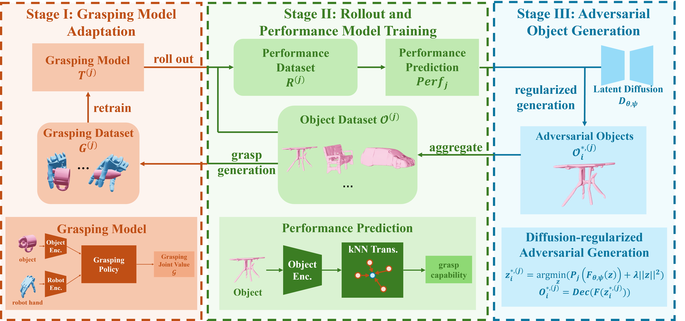

Overview of GAN-DexGrasp. The proposed framework iteratively trains a rollout-based performance predictor, generates challenging in-distribution adversarial objects, collects RL-based grasping data, and trains the grasping model. The right panel summarizes the average success rates across embodiments, demonstrating that our method outperforms all other baselines.
Ours
Original Grasping Model